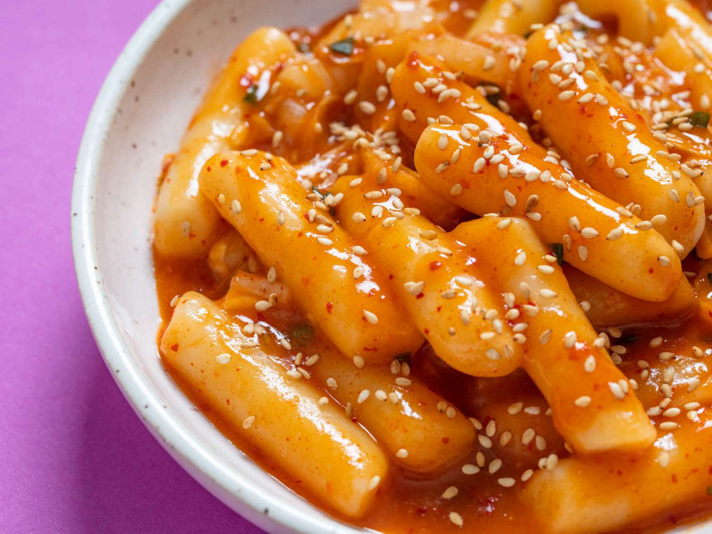

Tteokbokki Recipe

Description
Tteokbokki is a beloved Korean dish that tantalizes the taste buds with its combination of chewy rice cakes and spicy, flavorful sauce.
This popular street food features cylindrical or oval rice cakes cooked in a base of gochujang, a fermented red chili paste, along with
other savory ingredients like soy sauce and garlic. The result is a dish that boasts a striking red hue and a satisfyingly bold taste.
Often garnished with sesame seeds and green onions, tteokbokki is a delightful representation of Korean cuisine's vibrant flavors and textures.
Ingredients
Main
- 350g / 12 ounces Korean rice cakes, separated
- 150g / 5.3 ounces Korean fish cakes, rinsed over hot water & cut into bite size pieces
- 2 cups Korean soup stock
- 60g / 2 ounces onion, thinly sliced
Tteokbokki Sauce (Mix in Bowl)
- 3 Tbsp gochujang (Korean chili paste)
- 1 1/2 Tbsp raw sugar
- 1 Tbsp soy sauce
- 1 tsp minced garlic
- 1 tsp gochugaru (Korean chili flakes)
Garnish
- 1 tsp roasted sesame seeds
- 1 tsp sesame oil
- 1 stalk green onion, finely chopped
Steps
- Unless your rice cakes are soft already, soak them in warm water for 10 minutes.
-
Boil soup stock in a shallow pot over medium high head and dissolve the tteokbokki sauce by stirring it with a spatula.
Once the seasoned stock is boiling, add the rice cakes, fish cakes, and onion. Boil them a further 3 to 5 minutes until
the rice cakes are fully cooked. Then, to thicken the sauce and to deepen the flavor, simmer it over low head for a further
2 to 4 minutes.
- Add the sesame oil, sesame seeds, and green onion then quickly stir. Serve warm.